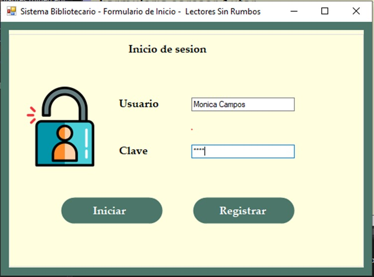
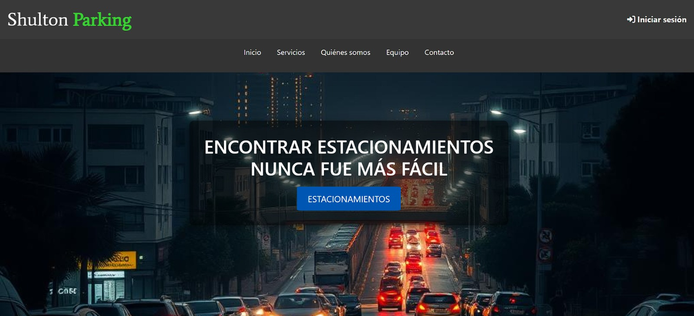

Proyectos

Proyecto Escandalo Boutique
Es un sistema con el cual tenian el control de entrada y salida de los empleados se mano HTML, CSS, Python, PHP y JavaScript, participe como Back-End.
GitHub Proyecto

Proyecto Sistema bibliotecario
Sistema bibliotecario, es un sistema que cuenta con todas las nesecidades de una bliblioteca se trabajo con C# y MySQL, participe como Back-End
GitHub Proyecto

Proyecto Shulton Parking
Sistema que facilitaba la busqueda de estacionamiento en el sector de usulutan usando PHP, MySQL, JavaScript y Json participe como QA Tester .
GitHub Proyecto